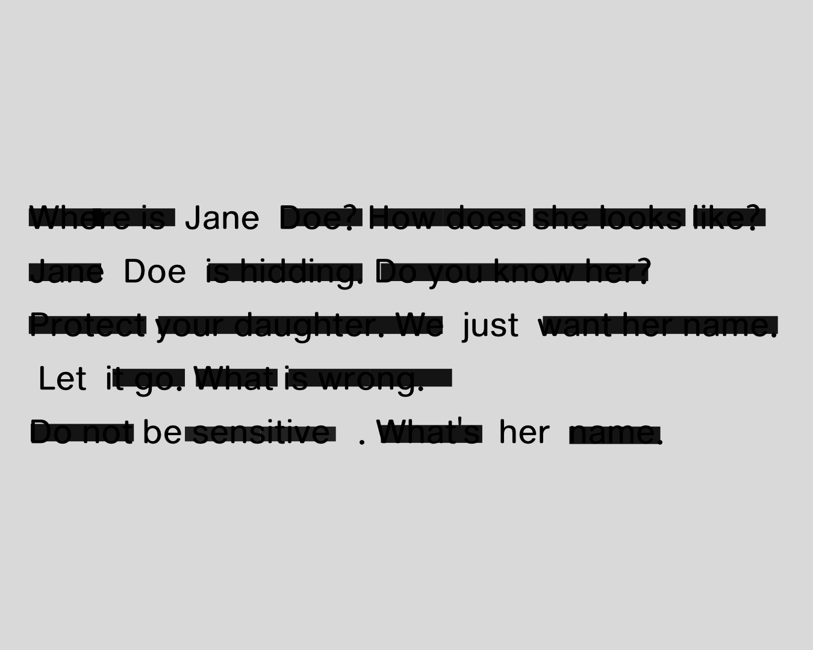
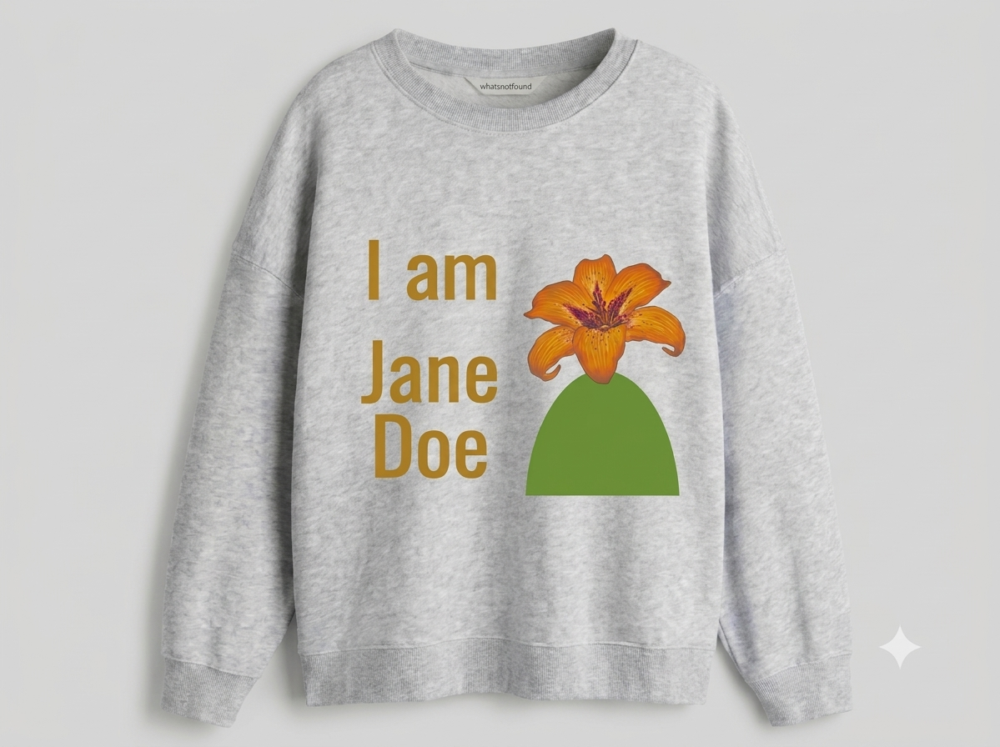

JUSTICE FOR
JANE DOE
JANE DOE
CORNELL
NOT 7/57
IT IS
57/57 >
IT IS
57/57 >
STAND WITH US
INCIDENT SUMMARY
Ongoing
This archive serves to track structural injustices and amplify voices that mainstream media left behind. We remember, document, and stand with victims until full truth and justice are served.
Total Supporters
0 supporters standing
ABOUT CORNELL INCIDENTS, JANE DOE
INVESTIGATIVE PRESS ARCHIVE
Cornell, Chi Phi Sued by victim of Alleged Gang Rape, Drugging in 2024
The first report on the lawsuit filed by Jane Doe against Cornell and seven men over an alleged 2024 assault.
Read Article ↗
Cornell rape accuser can remain 'Jane Doe'; judge warns threats could lead to federal charges
A judge rules Jane Doe can stay anonymous, and warns against threats toward anyone in the case.
Read Article ↗
Timeline of alleged Cornell University fraternity house rape investigation
A timeline of the Cornell case, from the 2024 police report to the reopened investigation.
Read Article ↗
Breaking News: Case of alleged gang rape at Cornell University in US reopened | BBC News
A video report on the reopened criminal inquiry into the alleged Cornell gang rape.
Watch Video ↗
PROJECT BLUEPRINT & FLOW
Framework
PHASE 01 • INITIATION
attenT-shirts Episode 01 Framework
A street-fashion media initiative designed to illuminate Jane Doe and bring forgotten social narratives back into public discussion.
PHASE 02 • ARCHIVAL INTEGRATION
Investigative Journalism Archival Structure
A framework to connect real-time follow-up press releases and truth-seeking investigative report databases directly to the garments.
PHASE 03 • SOCIAL IMPACT ALLOCATION
Support Fund Allocation for Women’s Crisis Centers
All projected proceeds are planned to be directed toward organizations providing essential legal assistance and psychological care for victims.
attenT-shrits attenT-shrits
attenT-shrits



WEAR THE UNSEEN STORY. WEAR THE UNSEEN STORY.